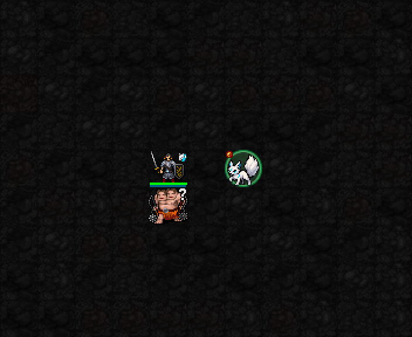
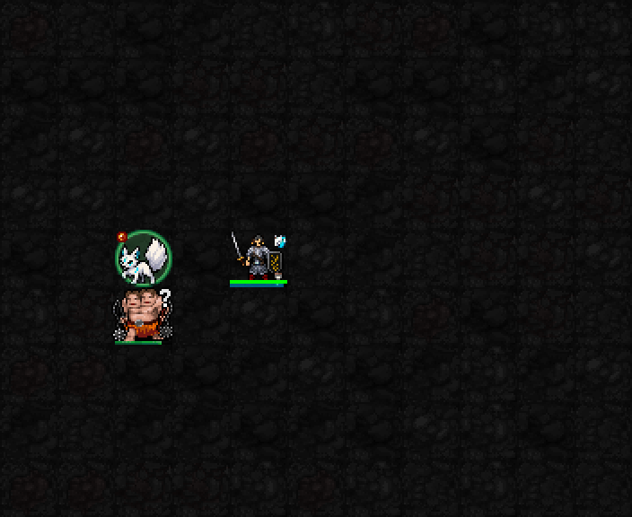
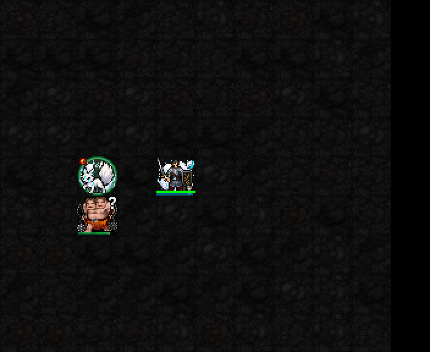
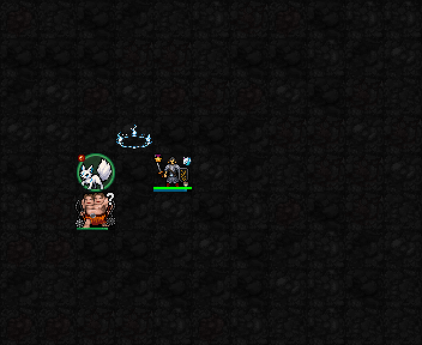

실제 SDL 테스트 전투장 캡처를 확대·느리게 반복했습니다. 효과를 덧그리지 않았습니다. 높은 자원·고정 장비의 장면이며 일반 던전 영상은 아닙니다. 전투 수치·비용·지속시간은 유지했습니다.
사용 전 → 실제 위치 교환 → 양쪽 자리의 흰 연기 → 떠난 자리 주변 3×3 여우불 → 사용 후. 바닥 불꽃은 출발점을 기준으로 표시하고, 실제 HP 피해를 받은 적에게는 몸체 위 푸른 여우불을 따로 표시합니다. 지속 화상 상태를 추가하는 효과는 아닙니다. 연기는 캐릭터 아래에 그립니다.

기존 여우 하나는 남고, 새로 소환된 여우 셋의 자리에서 푸른 소환 불빛이 차례로 열립니다. 마지막에는 실제 여우 넷이 보입니다. 전투 상태에는 여우들이 즉시 생성되며, 순차 등장은 추가 턴을 소비하지 않는 화면 연출입니다.


